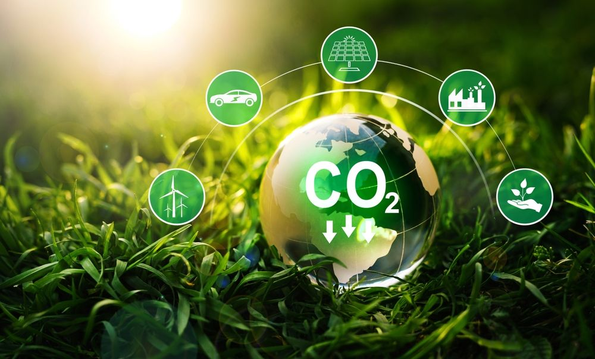
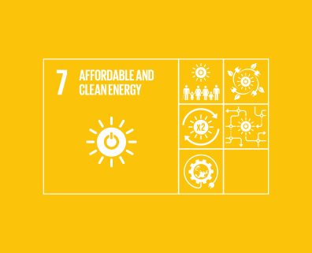
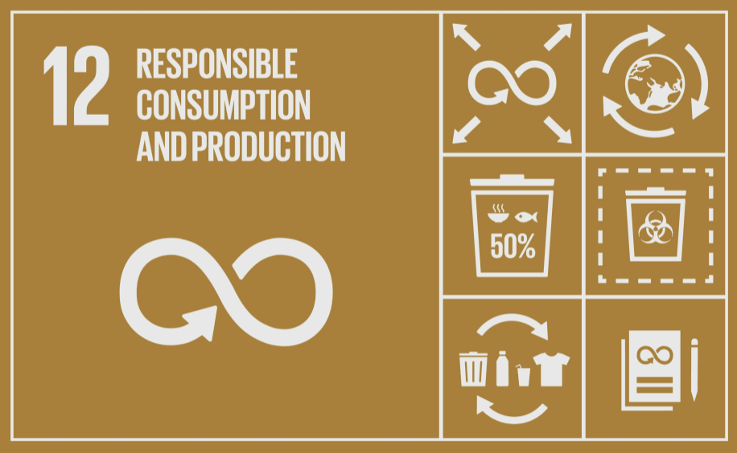

Il crescente aumento dei consumi globali ha generato impatti significativi sull'ambiente e ha sollevato la necessità di adottare azioni collettive per mitigare questi effetti. Questo documento esplorerà diverse strategie e iniziative che possono essere implementate a livello collettivo per ridurre i consumi e promuovere uno stile di vita più sostenibile.
La condivisione di risorse è un modo efficace per ridurre gli sprechi.
Iniziative come il car pooling, il bike sharing e la condivisione di beni e servizi contribuiscono a ottimizzare l'utilizzo delle risorse, riducendo al contempo l'impatto ambientale.
Le aziende giocano un ruolo cruciale nella riduzione dei consumi.
Ridurre gli imballaggi, sviluppare prodotti sostenibili e investire in tecnologie verdi sono solo alcune delle azioni che le imprese possono intraprendere per contribuire a uno stile di vita più sostenibile.
sono aspetti cruciali dell'advocacy collettiva.
Le azioni collettive per ridurre i consumi portano a una serie di benefici tangibili.
sono risultati che derivano da un impegno condiviso per uno stile di vita più sostenibile.
In conclusione, affrontare la sfida dei consumi eccessivi richiede un impegno collettivo. Educare, sensibilizzare, condividere e collaborare sono le chiavi per promuovere un cambiamento significativo verso uno stile di vita più sostenibile. Ognuno di noi ha un ruolo da svolgere nell'adottare e promuovere azioni che riducano i consumi e preservino il nostro prezioso ambiente per le generazioni future.
dell'ONU rappresenta un impegno globale per affrontare le sfide più urgenti e costruire un futuro sostenibile per tutti. Tra gli obiettivi chiave dell'Agenda, spiccano il 7, il 12 e il 13, ciascuno rivolto a tematiche cruciali per la nostra sostenibilità globale.
Descrizione: L'Obiettivo 7 mira a garantire l'accesso universale a un'energia affidabile, sostenibile e moderna.
Rilevanza: La transizione verso fonti di energia pulita è essenziale per mitigare il cambiamento climatico, migliorare la salute globale e promuovere uno sviluppo sostenibile.
Descrizione: L'Obiettivo 12 si propone di assicurare modelli di produzione e consumo sostenibili, riducendo gli sprechi e l'impatto ambientale.
Rilevanza: Questo obiettivo mira a ridurre l'inquinamento, preservare le risorse naturali e promuovere uno stile di vita sostenibile.